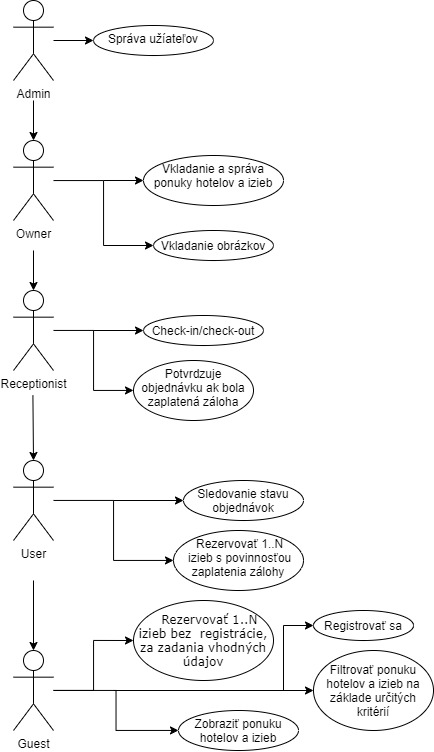
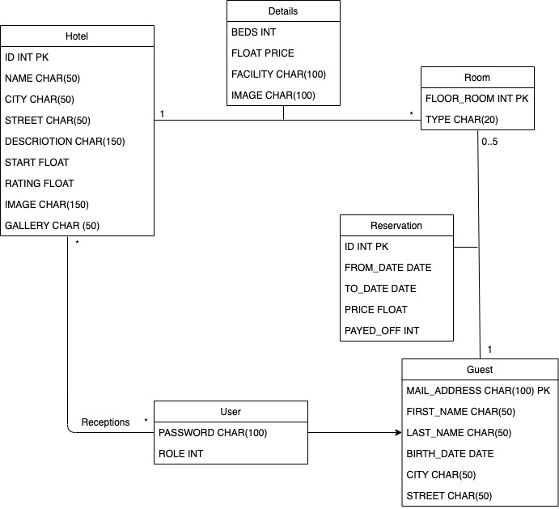

2. Hotel: rezervace a správa ubytování
- Autori
- Mário Ga¾i
xgazom00@stud.fit.vutbr.cz -
Rezervácie, vizualizácie hotelov a izieb, DB
- Matej Otèená¹
xotcen01@stud.fit.vutbr.cz -
Front-end, vyhµadavanie
- Jan ©ulavík
xsulav01@stud.fit.vutbr.cz -
Logging, registrácie, dashboardy
- URL aplikace
- odkaz na aplikaciu
U¾ívateµ systému pre testovanie
Uvedte prosím existujúcich zástupcov v¹etkých rolí u¾ívateµov.
| Login | Heslo | Role |
|---|
| admin | admin | Administrátor |
| owner | owner | Vlastník |
| reception1 | abcd | Recepèný Magnolie |
| reception2 | efgh | Recepèný Chemes |
| reception3 | ijkl | Recepèný Donly |
(Diagram pøípadu u¾ití není nutno vkládat, pokud IS implementuje role a p¾ípady u¾ití definované zadáním.)

Implementace
Projekt je implementovaný preva¾ne v jakzyku PHP v 7.4, za pou¾itia frameworku Nette 3. Jednotlive moduly sa nachadzaju v priecinku /app. Taktie¾ sme pou¾ili javascript, css, sql.
Databáza

Instalace
- Na serveri rozbalíme archív s aplikáciou
- V koreòovom adresári spustíme "composer update", tak sa nain¹talujú závislosti
- V súbore /app/config/local.neon zadáme adresu databázového serveru
- Na zvolenej databáze spustíme databázový skript /database/db_init.sql
Známé problémy